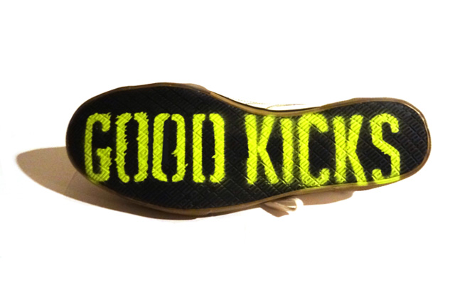
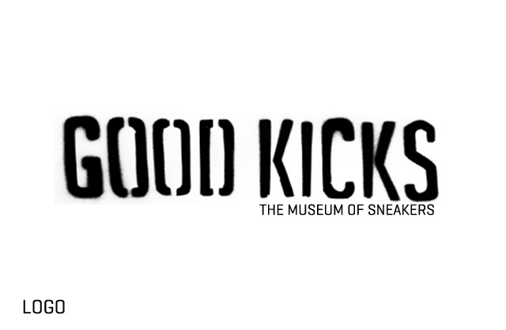
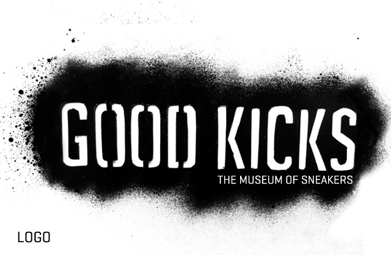
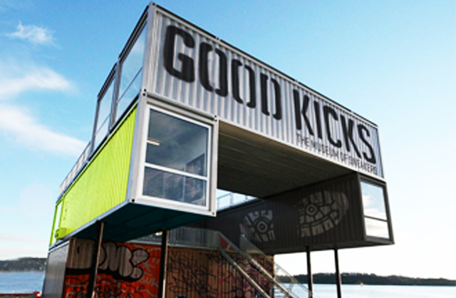
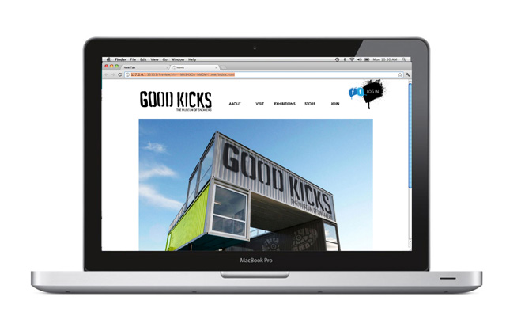
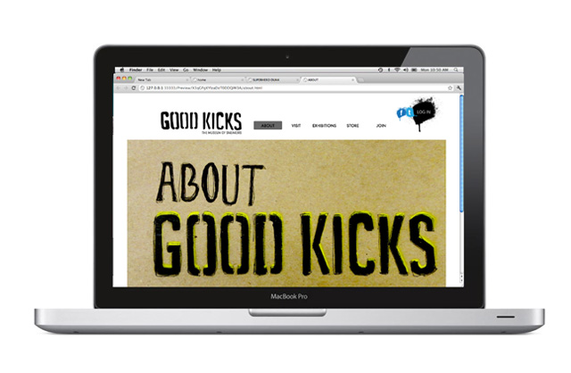
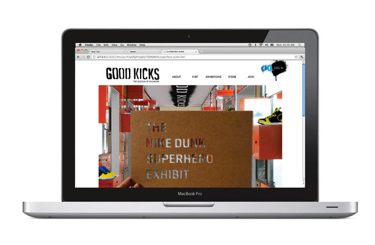
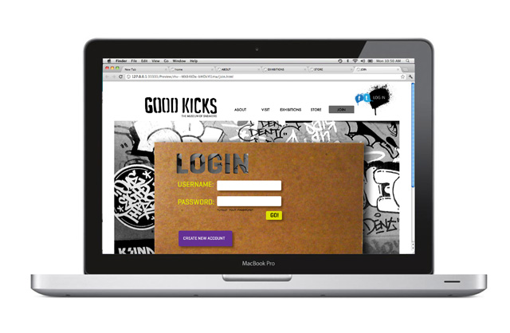
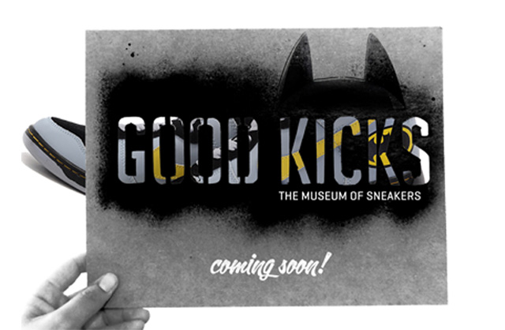
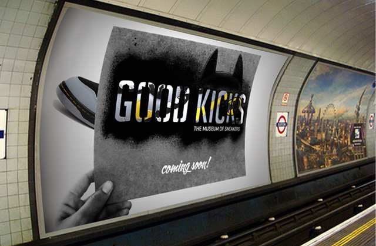
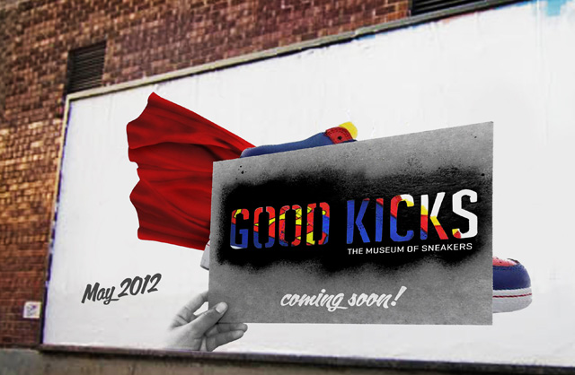
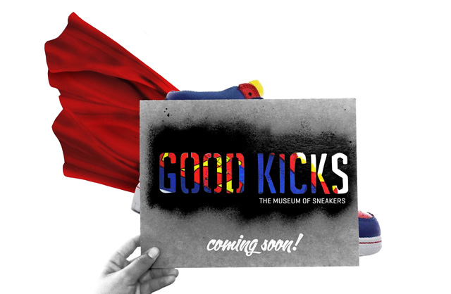

The Museum of Sneakers was a branding assignment I had in a GD class. We were allowed to choose any topic we wanted to create a Museum. At the time I was interning at Puma and I found myself really inspired by the sneakers. I had know idea what went into the process of designing a sneaker, so I decided to make Good Kicks. A fun urban pop up museum that exhibits everything from the latest footwear technologies to limited edition sneakers. For this project I created the logo, signage, website, and products.